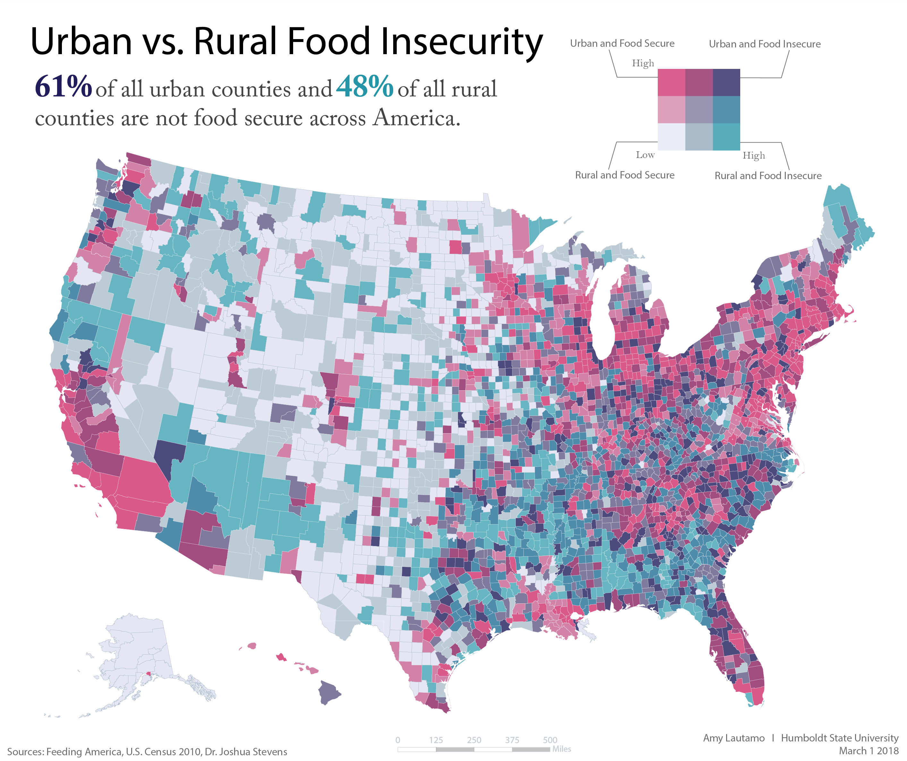
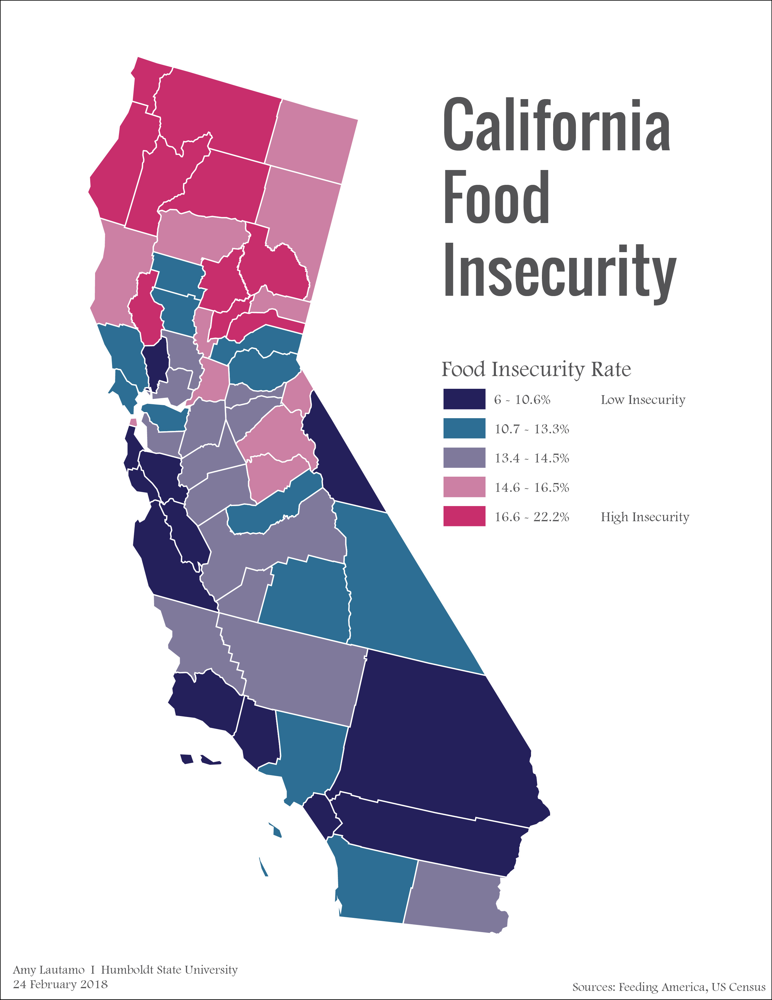

Food Insecurity by Amy Lautamo
This page is a collection of maps I created on the topic of food insecurity in the United States and in Humboldt County in California. These maps work to show the severity of this issue on both a national and local level and to provide a more visual geographic representation of at-risk areas.
Gaining Perspective
National Food Insecurity

Urban Vs. Rural Food Insecurity Across the U.S.
This map shows the prevelance of food insecurity across the U.S. in both urban and rural counties. This issue is complex and is affected by many different variables in urban and rural areas. The national average food insecurity rate is 13.4%. Download Image
California Food Insecurity

Food Insecurity Rates Across California
This map shows food insecurity rates by county across California. The state average food insecurity rate is 12.5%. The county with the highest rates of food insecurity is Siskiyou County at 19.6% while Humboldt and Trinity Counties tie for second highest at 18.2%. Download Image
Going Local: Humboldt County, CA
Lab 1

Lab 1 sample
Here is a sample of lab 1. Download Image
Lab 2
Arcata Marsh Mural
Describe some aspects of the map here. Download Image
Lab 3

Arcata Marsh Mural
Describe some aspects of the map here. Download Image
Get In Touch
Drop me a line


{kind=link}
{kind=link}